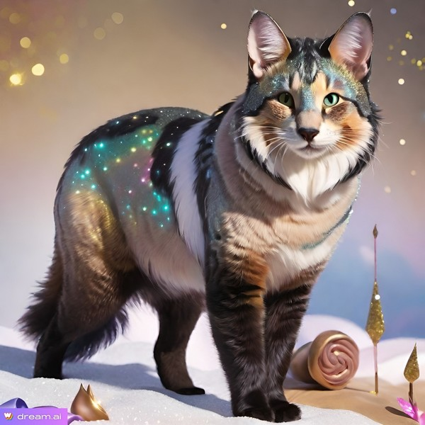

Kedvenc Linkjeim

Közösségi oldalak
Facebook
- Népszerű közösségi hálózat
Instagram
- Képmegosztó platform
Twitter
- Mikroblog szolgáltatás
YouTube
- Videómegosztó platform
Pinterest
- Képmegosztó platform
Sims
The Sims hivatalos oldal
- EA Games Sims oldala
Mod The Sims
- Sims modok és egyéni tartalmak
Sims Wiki
- Részletes információk a játékról
TSR
- Letöltés
SimsZoo
-Letöltés
Verona
-letöltés
Játék
Steam
- Digitális játékplatform
GOG
- DRM-mentes játékok
Epic Games Store
- Játékbolt és ingyenes játékok
Forge Béta
Torrent
The Pirate Bay
- Torrent kereső
µTorrent
- Népszerű torrent kliens
qBittorrent
- Nyílt forráskódú torrent kliens
Ztracker
-letöltés
Receptek
Nosalty
- Magyar receptgyűjtemény
AllRecipes
- Nemzetközi receptek
Mindmegette
- Változatos receptek és gasztro hírek
Gyémánt
Receptek
Receptek és egyebek
Képszerkesztés
Photopea
- Ingyenes online képszerkesztő
GIMP
- Nyílt forráskódú képszerkesztő program
Canva
- Grafikai tervező platform
Enyffilterleckek
- leckék
Képtáram
Hasznos linkek
Wikipedia
- Szabad enciklopédia
Wolfram Alpha
- Számítási tudásbázis
Duolingo
- Ingyenes nyelvtanulás
Google
- A világ legnépszerűbb keresőmotorja
Startlap
- Magyar kezdőlap és linkgyűjtemény
Freemail
- Ingyenes magyar e-mail szolgáltatás
Rea-Tex
- Kézimunka
Időjárás
-Radarkép
Növényabc
-linkek
Növény-abc
- Növények
Pólómánia
-pólók
AI nyelvi modell
ChatGPT
- OpenAI nyelvi modell
Claude
- Anthropic AI asszisztens
Perplexity AI
- AI-alapú kutatási asszisztens
Groq
Nyelvi model
Openai.fm
Szövegfelolvasó
AI képgenerátor
Midjourney
- AI képgenerátor Discord-on keresztül
DALL-E
- OpenAI képgenerátor
Stable Diffusion
- Nyílt forráskódú AI képgenerátor
Glif-Flux Pro
Képgenerátor
Wan.video
Videó és képgenerátor
Freepik
Videó-kép generátor, stb.
Krea.ai
- AI képgenerátor
DeepSeek Chat
- AI nyelvi modell
AI eszközök
NotebookLM
- AI-alapú jegyzetkészítő és összefoglaló
Sims / Játék modok
CurseForge Sims 4
– Modok letöltése
SimsAddicts
– Egészséges játékmod leírás
Biokert
Biokiskert – Ragadozó atka
Fórumok
CanadaHun
– Tudásmegosztó fórum
Videómegosztók
BitChute videó
PSP leckék
Malacka Design
– PSP leckék
Riatar plugin lelőhelyek